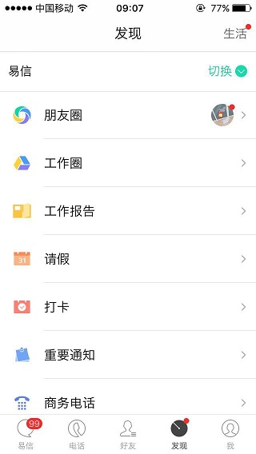
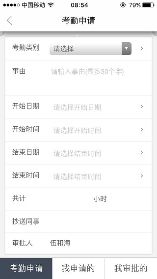
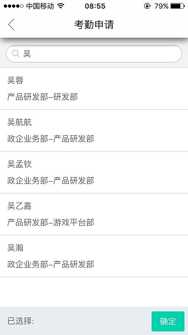
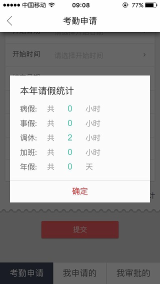
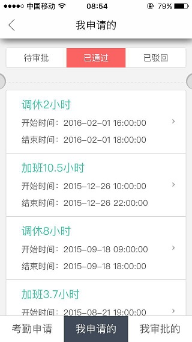
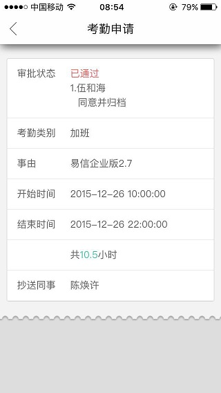
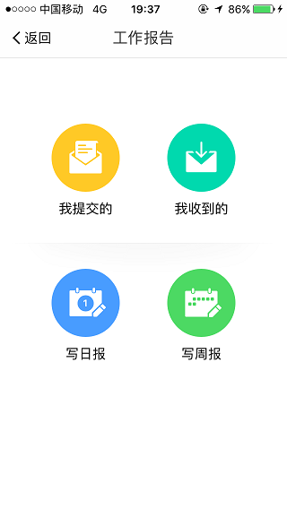
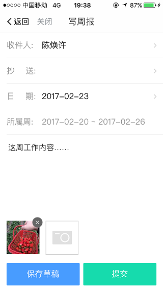
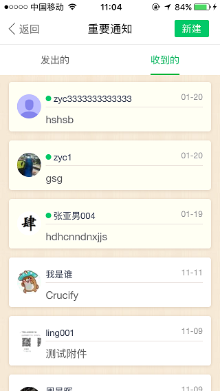
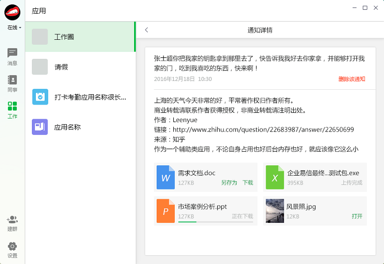

介绍：企业管理平台，主要包括企业员工数据的管理，企业公众号应用和易信企业版易应用的管理配置功能。让企业的沟通、协作和管理更加高效和便捷。
入口：易信企业版-发现-请假
介绍：目前整个翼信科技在使用请假功能。可以选择事假、病假、年假、调休、加班五种考勤类型，并抄送同事和递交上级领导审批。审批结果会推送消息知会。
考勤申请单
选择审批人
考勤统计
考勤列表
考勤详情
入口：易信企业版 - 发现 - 工作报告
介绍：可以方便的撰写日报或者周报，并提交给主管或抄送给相应同事。同时还有评论、阅读情况和草稿功能。
工作报告首页
工作报告列表
填写工作报告
介绍：方便领导对底下员工发布重要通知，并能统计阅读率，还能发送短信提醒。
重要通知列表
新建重要通知
重要通知详情（PC端）
